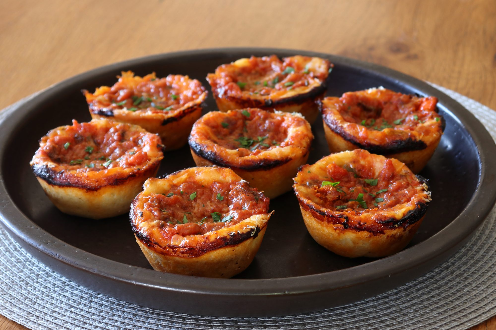

Chicago Style Deep-Dish Pizza Muffins

Description
Put down the fork and knife… here's a Chicago deep-dish pizza that you can actually eat by holding it in your hands! A beautiful golden crust contains a meaty, cheesy, saucy filling with Italian sausage, sweet peppers, and
3 types of cheese. The sauce and cheese char slightly on the outside as they bake, resulting in a super savory taste.
Ingredients
- 2 Teaspoons Olive Oil
- 16 Ounces Prepared Pizza Dough
- 4 Ounces Provalone Cheese
- 3⁄4 Cup Cooked, Crumbled Italian Sausage
- 1⁄2 Cup Cooked, Diced Sweet Peppers
- 4 Ounces Grated Mozarella Cheese
- 1⁄2 Cup Pizza Sauce
Steps
- Preheat the oven to 400 degrees F (200 degrees C). Generously grease a 12-cup standard muffin pan with 2 teaspoons oil.
- Roll dough on a lightly floured surface to a thickness of 1⁄8 inch. Pick it up from the edges to make sure it's not stuck to the surface,
then cut out twelve 4-inch circles. Reroll the dough to cut all 12 circles if necessary.
- Place each circle into a prepared muffin cup, making sure it's centered. Press and push dough up the sides of the cups, getting close to, but not all the way up to the top.
When all circles have been placed in the muffin pan, go around one more time to push and press on each one.
-
Put 1 tablespoon provolone cheese into each cup, followed by 1 tablespoon cooked sausage and 2 teaspoons cooked peppers. Lightly press on the fillings to compress, then top with 1 rounded tablespoon mozzarella cheese and 2 tablespoons pizza sauce,
pushing the sauce down gently into the fillings; it's okay that the fillings will be slightly higher than the pan. Sprinkle Parmigiano-Reggiano cheese generously over top.
- Bake in the upper center of the preheated oven until the tops are beautifully browned, 30 to 35 minutes.
- Remove from the oven and cool in the pan for 10 to 15 minutes. Go around the edge of each muffin with a knife, then use a fork or small spatula to remove from the pan.